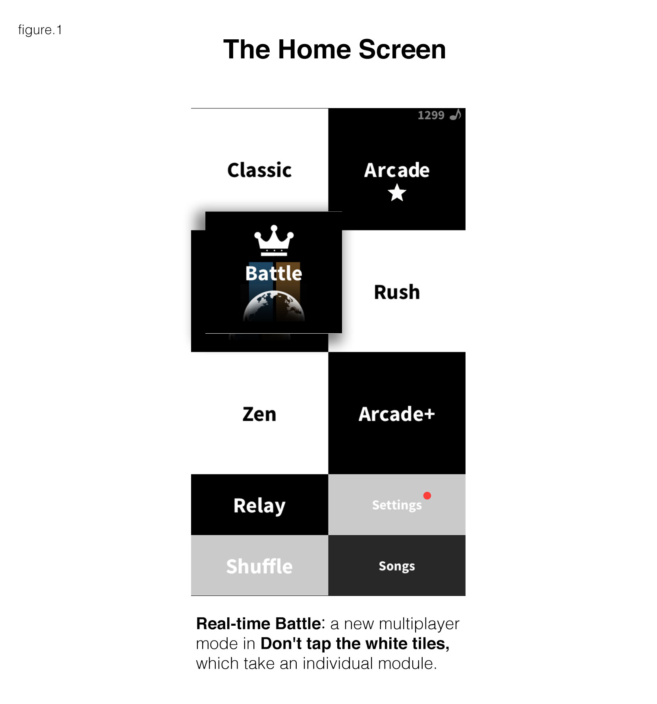
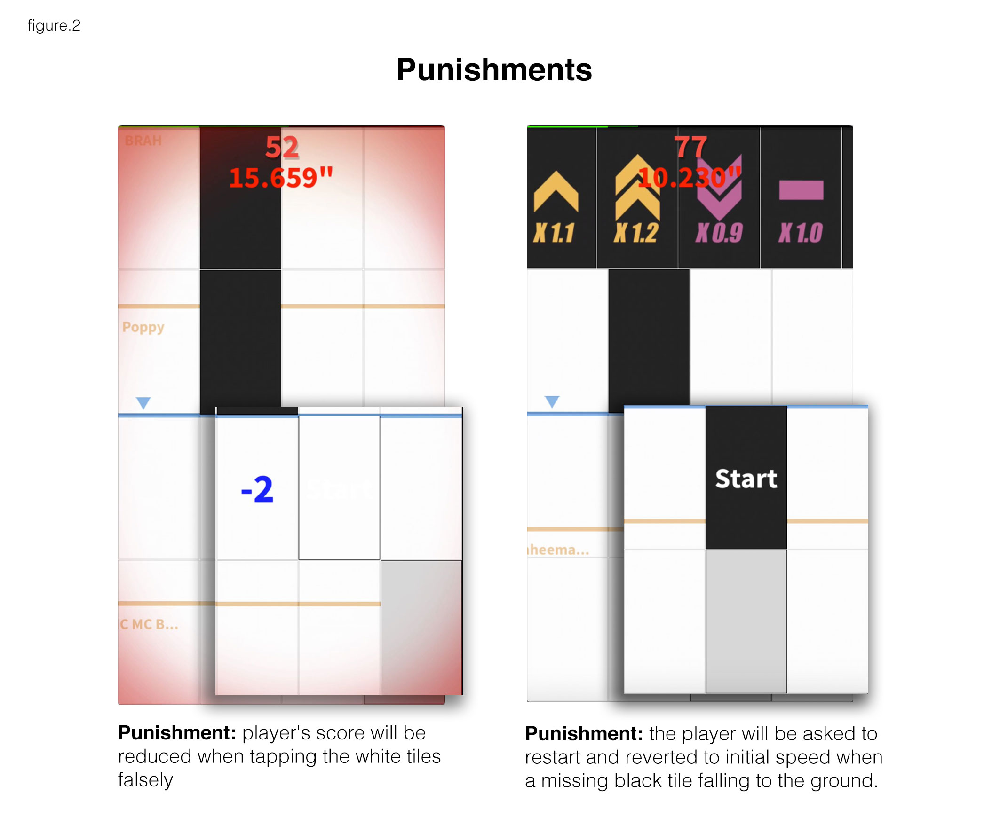
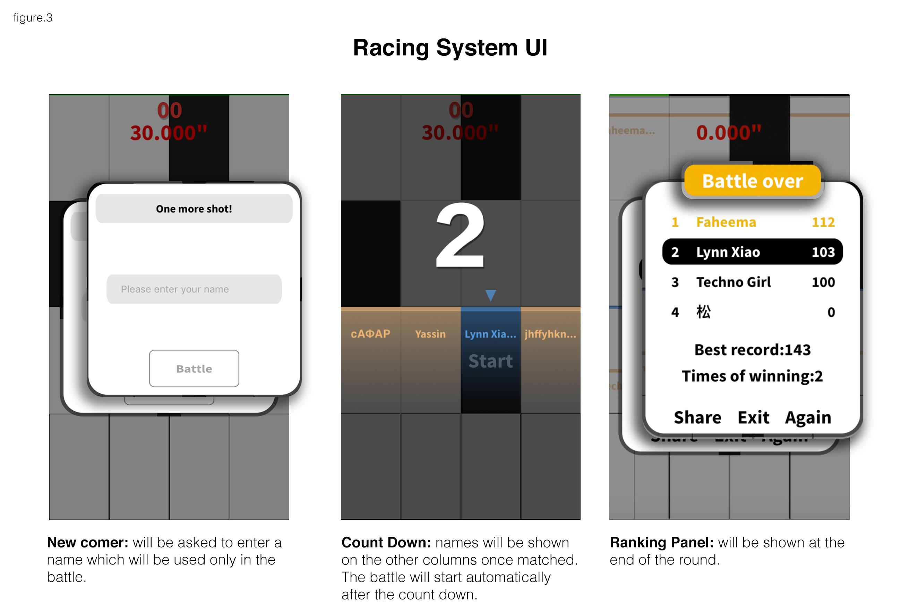
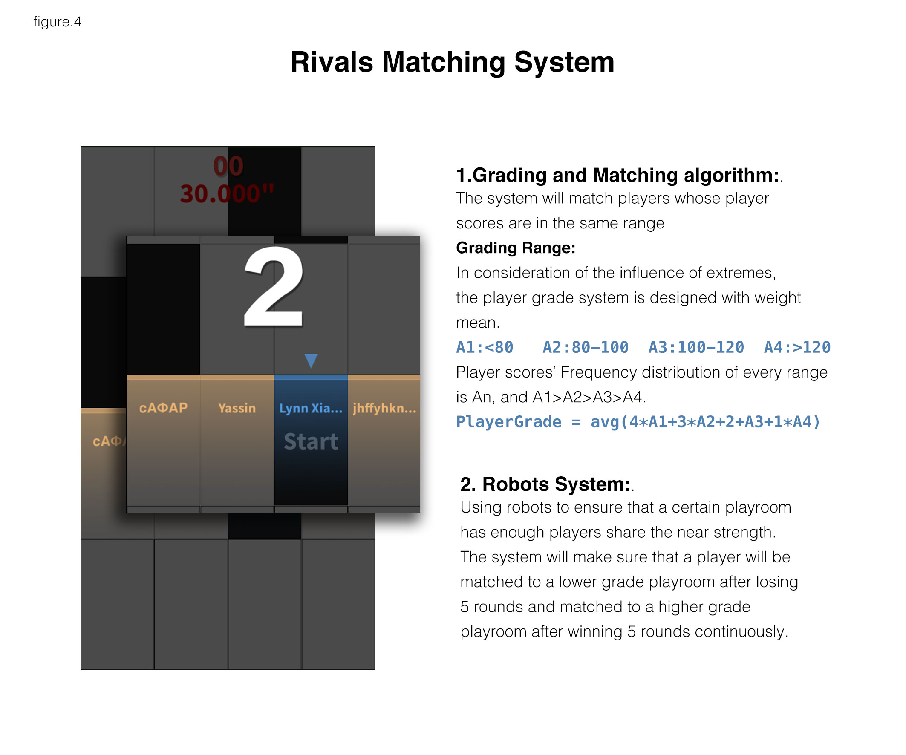
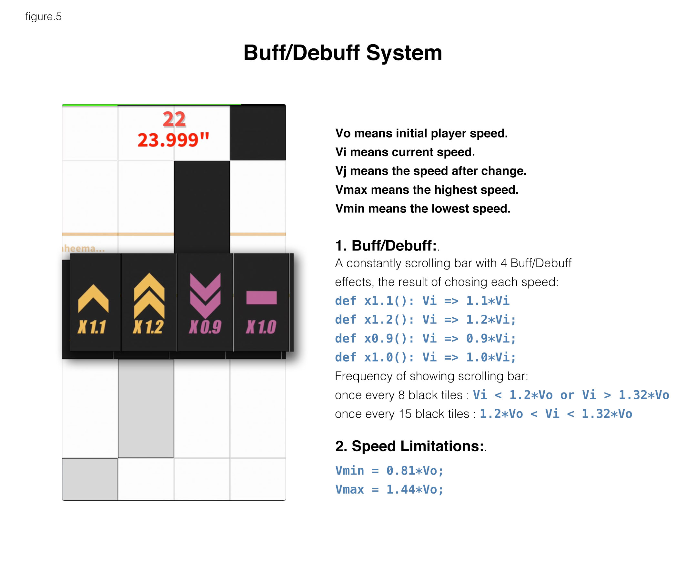

The Real-time Battle，or just Battle Mode, is a new multiplayer mode of the game Don’t Tap the White Tiles (DTWT), taking an individual module on the entry screen (As figure.1 shows). Battle Mode fulfills the need that players want to race with other players on the internet. New systems including Racing, Rivals Matching, Buff/Debuff and Effects are introduced as well.

Battle Mode is intended to give the old game DTWT a second life, trying to make it more engaging and improve the DAU (daily active users).
The core gameplay of Battle Mode, it inhrent and extent the original gameplay of DTWT: During each round, the players are asked to tap more falling black tiles and gain more scores. Missing and mis-tapping white tiles would receive punlishments(As figure.2 shows), restart and deduction, correspondingly. (As figure.3 shows)


It also includes a friendly guidance for new comers and playroom UI like timer, count downs, and the final judgements panel.(as figure.1)
Aiming to allot players with close capabilities and ensuring the fairness and playability of game. The Grading and Matching algorithms are listed in the figure.3. Futhermore, a Robots System is introduced for cold start and complementing when eligible players are insufficient.(as figure.4)

A constantly scrolling bar with 4 Buff/Debuff effects, designed to enhance the rivalrousness by raising the difficulty and variblility. After this system released, the average rounds of each player doubled.
Moreover, a Speed Limitations are designed to keep a suitable tolerance rate by setting the lower and upper bound of racing speed. The limitation algorithm is listed in figure.5.

Also designed for strengthening the sense of competition. Audios like cheering or booing and Visual Effects including progress bars and edge-flicking remind players of the ranking changing all the time.
To optimize the out-synchronization casued by possible flaky network, the system would estimate the speed of rivals’ progress bars from the former data.
Take charge of the whole design work of the real-time battle, the supervision and control of work progress and efficiency and management of time to meet magazine deadline. Work out new iteration plans based on both data and players’ feedback.
By being in charge of this project, I not only have a comprehensive understanding of how to create a game from nothing, but also get to know how to manage and schedule a group of coworkers to work efficiently, which play s significant role in improving my ability to be a good game designer. More than anything, from this project, I know that only by testing all the details from a player’s view by youself after logical design, can make the theoretical knowledge of game design and the playability of the game both perfectly achieve.
Download link: